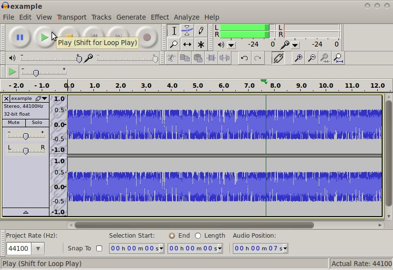

Mirror music depends on the gapless repeating playback of sound.
Sound fragments should not play once, but must repeat continuously,
without any noticeable interruptions.
One possibility to do this with the files on this website,
is to use the free
Audacity
software (available for Mac, GNU/Linux and Windows).
Audacity supports gapless repeating playback (“Loop Play”).
This is illustrated in the screenshot below:
